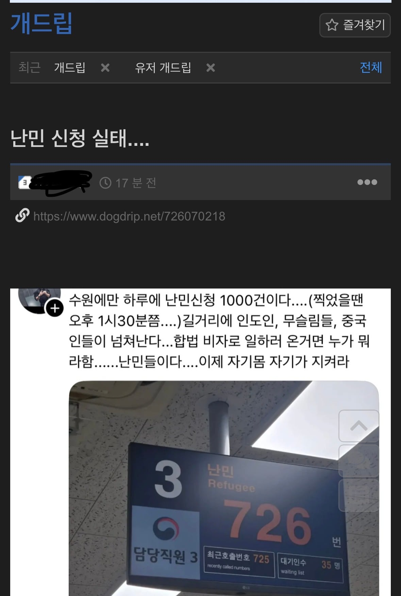
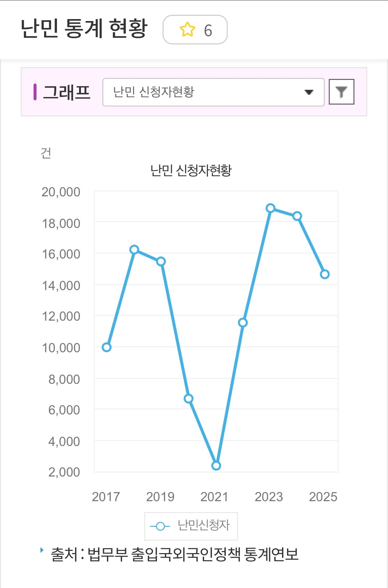
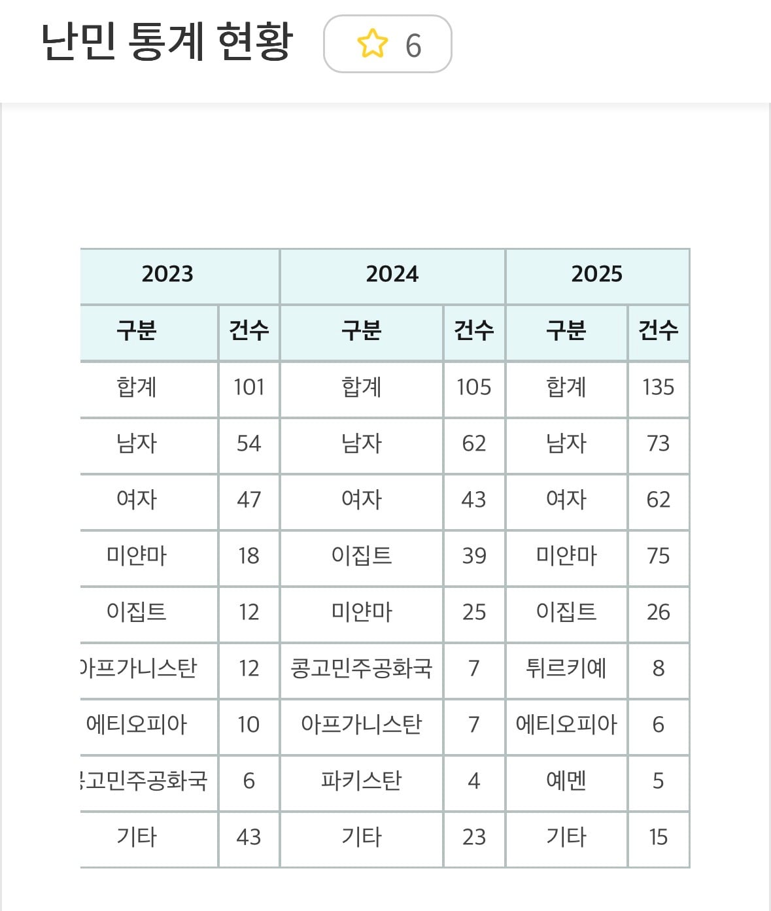

https://www.dogdrip.net/726070218

이 글에선 난민 관련 업무로 번호표 뽑은게 726으로 뜨니까
난민이 하루에 1000건 신청된다고 하는데
그럼 주5일 영업하는 출입국 사무소 기준으로
일주일에 5000건
한 달이면 20000건
1년 12달이면 24만건이 신청된다는 소리다
과연 그럴까?

진짜겠냐고 씨발
여기가 터키 레바논도 아닌데
작년 난민 신청이 1만 4천건이었음
그래도 난민신청이 1만 4천건이면 나라 망하는 거 아니냐고?

작년에 진짜 난민된 사람들 딱 135명이었다
그리고 이 135명이 뭐하는 사람들인 줄 알음?
대부분이 정치범들임
가면 고문받다 죽고 장기까지 탈탈 털리는 애들이라고
근데 뭐 씨발 난민이 어쩌니 나라가 망했니
나라는 10만 난민 입국설 퍼트리고 믿는 머저리 새끼들 때문에 망하는 거임
135명짜리 난민 때문에 망하는게 아니라
괴담을 퍼트리는 애들은 목적을 가지고 퍼트리는데 사람들이 너무 잘믿음. 생각도 안하고 ai이렇게 발전돼있는데 알아보려고도 안 함